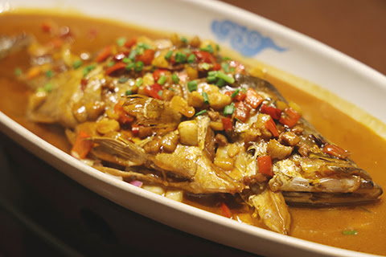
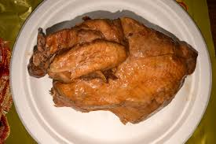
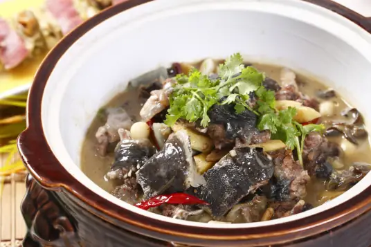

🍛 代表菜色介紹

毛豆腐
毛豆腐是徽州傳統發酵豆腐，外表長滿白色絨毛，煎至外酥內嫩，風味獨特帶有自然發酵的香氣，是徽菜中別具一格的特色美食。

臭鱖魚
臭鱖魚利用特有的腌制發酵方法，魚肉香氣濃烈帶有獨特臭味，經煎煮後入口鮮美，是徽菜中極具地方特色的名菜。

符離集燒雞
符離集燒雞以特殊醃料醃制後慢火烤製，外皮酥脆，肉質鮮嫩多汁，香味四溢，是安徽徽州地區的招牌名菜。

火腿燉甲魚
以徽州火腿與甲魚同燉，湯汁鮮美濃郁，肉質鮮嫩，膠質豐富，是一道滋補佳餚，代表徽菜的精湛燉煮技藝。